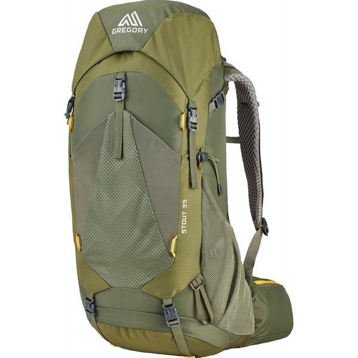
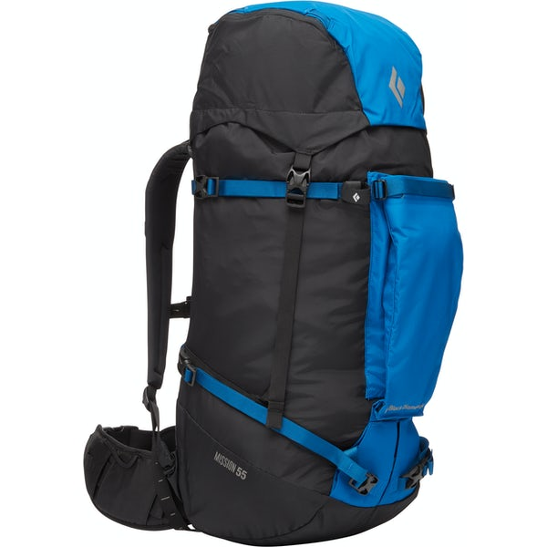
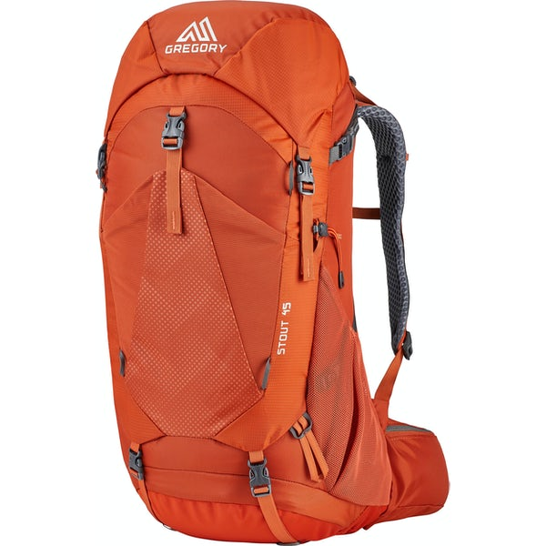
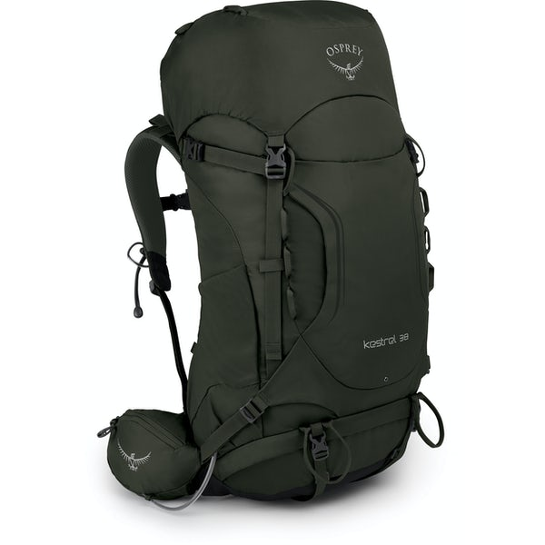
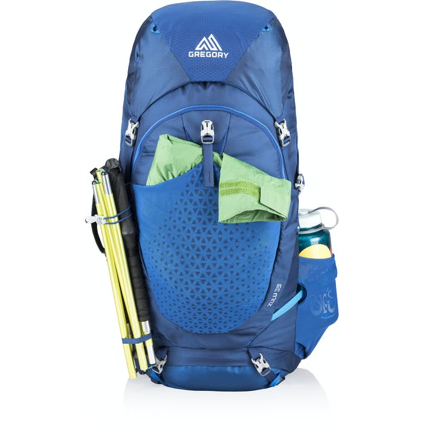

Here is a list of different emergencies in Canada if you were at home waiting for them to happen.
We will be suggesting different types and sizes of bags for each emergency. What you may want to pack in that bag. Also, some suggetions to put in a general go bag.
With an earthquake or tornado comes a lot of rubble and a lot of uncertainty. You may not have a house with heat. All your food could be gone and who knows what else. In
the event an earthquake happens we suggest this bag.

This is a 35L bag and a great all around starting place for most go bags. Here is a list of items that you would be a good idea to pack in case of this emergency.
With a flood or a tsunami usually comes a lot of water. In this case your going to want a little bit bigger of a bag to hold a few more articles of clothing.

This is a 52L bag. With the extra space there is lots of room to keep things dry. Here is a list of items that you would be a good idea to pack in case of this emergency.
When it comes to fires you will need to have this bag in an easy and accesible place. They can happen around the holidays or in the summer months when the heat is dry and there hasnt been much rain.

This is a 45L bag.
With an earthquake comes a lot of rubble and a lot of uncertainty. You may not have a house with heat. All your food could be gone and who knows what else. In
the event an earthquake happens we suggest this bag.

This is a 35L bag and a great all around starting place for most go bags. Here is a list of items that you would be a good idea to pack in case of this emergency.
With an earthquake comes a lot of rubble and a lot of uncertainty. You may not have a house with heat. All your food could be gone and who knows what else. In
the event an earthquake happens we suggest this bag.

This is a 35L bag and a great all around starting place for most go bags. Here is a list of items that you would be a good idea to pack in case of this emergency.